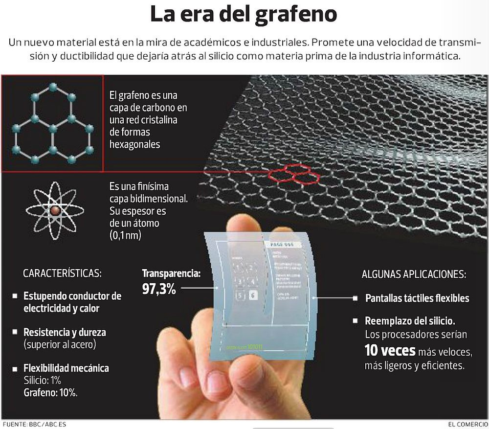

Artículo 2 Grafeno una tecnología disruptiva con aplicaciones inimaginables
Javier Eduardo Castillo de Paz
Estudiante de Ingeniería en Ciencias y Sistemas - USAC
Javicastillo820@gmail.com
Tecnología Disruptiva
Existen muchas formas de clasificar la tecnología por ejemplo, por sus avances, según esto puede ser sostenida o disruptiva. Sostenida es aquella que se perfecciona con el paso de tiempo, es decir que a través del tiempo se identifican defectos u oportunidad de mejoras y se corrige. La tecnología disruptiva, platea soluciones totalmente diferentes para un problema, debe ser más eficiente que la solución actual, crea un nuevo sector, creando una necesidad y solucionando problemas que nadie había abordado.
La tecnología ha impulsado a la humanidad y ha cambiado totalmente la forma de interactuar. Por ejemplo, la máquina de escribir sustituyó la escritura a mano en ciertas actividades y facilitó la edición de libros. Las computadoras en sus inicios eran de uso militar, después, para el área comercial. Con la aparición de la interfaz gráfica la computadora se dirigió para cualquier usuario gracias a la facilidad de uso, otro de estos avances tecnológicos y más recientes es el teléfono inteligente, que sin tanta palabra para algunos es un centro de trabajo.
Todas las tecnologías anteriormente descritas han permitido alcanzar cosas que hace 30 años parecían de ciencia ficción y desde su creación han evolucionado a pasos agigantados, ahora la pregunta es ¿qué tecnología permitirá dar el siguiente paso a la humanidad para conseguir cosas que parecen de ciencia ficción en nuestro tiempo?; según las últimas investigaciones el grafeno es un serio candidato para ayudar a conseguir esas cosas.
La aplicación del grafeno o donde podría utilizarse es en sustituir el silicio que es el principal componente utilizado en la electrónica, es el segundo elemento más abundante en la tierra y se utiliza para fabricar circuitos electrónicos, integrados, transistores y otros. Por el contrario, el principal problema del grafeno es la dificultad para producirlo, con el fin de encontrar soluciones a la producción se llevan a cabo investigaciones acerca del grafeno.
La materia prima del grafeno es el grafito y es abundante en la naturaleza, el cual se obtiene de las minas de carbón, es el material con el que se fabrican lápices.

Fuente: http://www.elmundo.es
Aplicación del grafeno
El uso del grafeno empieza a ser una realidad, Fijitsu elaboró sensores de gas con grafeno, estos son diez veces más sensibles a los realizados con silicio, esto contribuye a la seguridad industrial ya que cualquier fuga de gas por mínima que sea puede ser detectada más rápido en los lugares de trabajo.

En las baterías de litio se está aplicando el uso del grafeno, la empresa china Huawei ya lo está utilizando para reducir el calor de las baterías con el fin de mejorar la vida útil de las baterías, es el calor por uso o durante la carga lo que reduce la vida de las baterías, el grafeno permite utilizar la batería hasta a 60 grados Celsius y aun así extiende la vida útil de la batería hasta el doble.
Otra compañía que ha hecho cosas interesantes es Zap&Go, creó una batería externa capaz de recargarse en solo 5 minutos, además, posee una larga vida útil. La carga de los dispositivos será de manera normal, pero, nos permite cargar la batería en poco tiempo y seguir movilizándonos con nuestros dispositivos disponibles para cualquier emergencia.
Aplicaciones ambiciosas a futuro
Genera preocupación el incremento de la población y mala administración de los recursos naturales como en el caso del agua, ya que el agua dulce es muy limitada en el planeta. Las investigaciones apuntan a que el grafeno aparecería en un filtro purificador, podría filtrar agua salada del mar y volverla agua potable a través de la desalinización.
El filtro purificador se obtendría al crear una membrana capaz de filtrar en diferentes grados, es decir podría dejar pasar una molécula de agua pero no las de sal.
Por último quiero hablar del consumo energético a nivel mundial, actualmente se contamina mucho para producir energía. Se han elaborado planes para reducir esta contaminación, pero, en este mundo donde lo que importa es llegar antes a los consumidores sin pensar en la ecología es necesario encontrar formas de producir energía limpia. TESLA propone una gran solución, se trata de crear una red de electricidad a nivel mundial, como la internet, creando conexiones energéticas a nivel mundial con las cuales podremos compartir energía sin importar el lugar donde se produzca, esto puede ser una realidad con el grafeno, gracias a su conductividad eléctrica puede servir para realizar los cables y estos no perderían energía en la transmisión ya que serían muy rápidos, también creando baterías con grafeno se podría almacenar más energía y rápidamente para no perder la energía que se produce.
Sin duda en este momento el grafeno parece la puerta al futuro, pero el avance en las investigaciones que se están llevando a cabo determinará si esto será una realidad o se tendrán que buscar otras alternativas.
Conclusiones
El grafeno es un material con el cual se pueden lograr grandes avances en muchas áreas de la ciencia.
El obstáculo más grande para su implementación y comercialización es la dificultad para fabricarlo.
Actualmente existen algunas aplicaciones del grafeno, las cuales demuestran que es un material que puede brindar mejoras respecto a los materiales que se utilizan en la actualidad.
Referencias
(15/08/2017) Enrique Romero, Sensores de gas hechos con grafeno 1.
(15/08/2017) Grafeno, revolución energética 2.
(25/08/2017) Grafeno, implementaciones a corto plazo 3.
(25/08/2017) Grafeno, carga de móviles en 5 minutos 4.
Fuente: http://grafeno.com